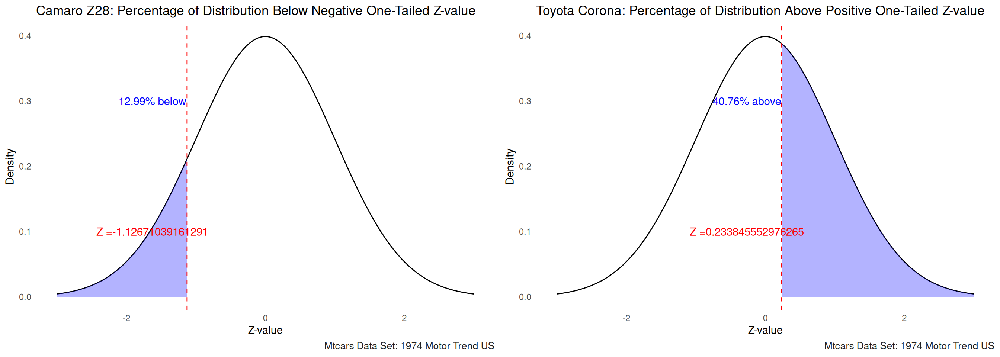
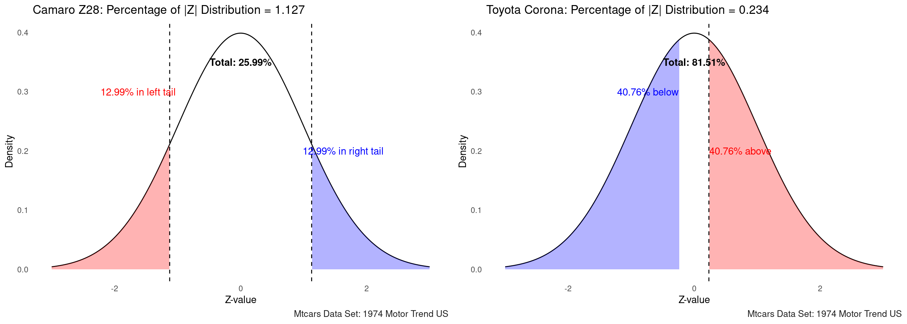
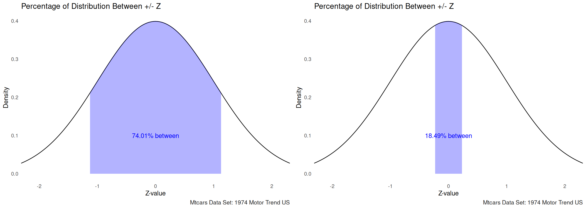

What is a z-score you ask? A z-score is a transformed version of a
raw score in a data set. This transformation allows us to standardize a
mean of 0 and a standard deviation of 1. Thus,
allowing us to more easily see how far above or below the
mean a raw score is.
Positive z-score - the raw score is above the meanNegative z-score - the raw score is below the mean\[ Z=\frac{X-\overline{X}}{S} \]
\[ Z\;=\;calculated\;z-score \\ X=\;raw\;score \\ \overline{X}=\;sample\;mean \\ S=\;sample\;standard\;deviation \]
We will be utilizing the mtcars data set. Here we will normalize the mpg scores and return their equivalent z-score values.
###Compute the last_evaluation Z scores
mtcars_all_zscores<- mtcars %>%
mutate(mpg_zscore = (mtcars$mpg - mean(mtcars$mpg))/sd(mtcars$mpg))
reactable(mtcars_all_zscores,filterable = T,striped = T,searchable = T,minRows = 5,defaultPageSize = 5)Here we are calculating the z-scores relevant to the Camaro Z28 and the Toyota Corona. Due to the difference in everything from engine size, displacement, and mpg we can show two very contrasting vehicles.
The percentage of the distribution that falls above (or below if your score is negative) that value (this is the one-tailed for -z or +z)
# Set the negative one-tailed critical value (Z-value)
z <- as.numeric(mtcars_all_zscores[20,][12]) # Example value, you can change it as needed
# Calculate the percentage below the negative one-tailed critical value
percentage_below <- pnorm(z) * 100
percentage_below## [1] 98.90261library(ggplot2)
# Set the negative one-tailed critical value (Z-value)
z <- as.numeric(mtcars_all_zscores[24,][12]) # Example value, you can change it as needed
# Calculate the percentage below the negative one-tailed critical value
percentage_below <- pnorm(z) * 100
# Generate a sequence of values along the x-axis
x <- seq(-3, 3, length.out = 1000)
# Calculate the corresponding probabilities under the standard normal curve
y <- dnorm(x)
# Create a data frame with x and y values
df <- data.frame(x, y)
# Create the plot
ggplotone<- ggplot(df, aes(x, y)) +
geom_line() +
geom_ribbon(data = subset(df, x <= z), aes(ymin = 0, ymax = y), fill = "blue", alpha = 0.3) +
geom_vline(xintercept = z, linetype = "dashed", color = "red") +
annotate("text", x = z - 0.5, y = 0.1, label = paste0("Z =", z), color = "red") +
theme_minimal() +
labs(x = "Z-value", y = "Density", title = "Camaro Z28: Percentage of Distribution Below Negative One-Tailed Z-value") +
annotate("text", x = z - 0.5, y = 0.3, label = paste0(round(percentage_below, 2), "% below"), color = "blue")+gonzo_theme()## [1] 40.75524
The percentage of the distribution that falls above and below the |z| (this is the two-tailed value)

The percentage of the distribution that falls between +/- z (this is the area between +/- z)
